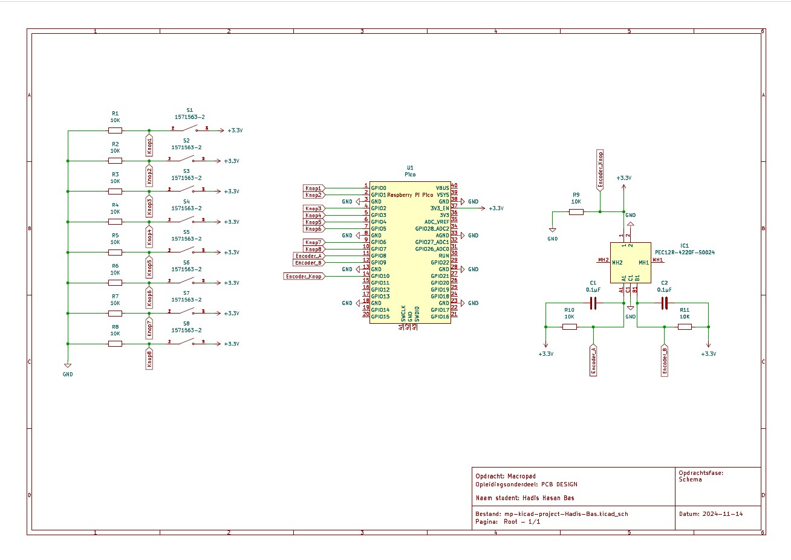
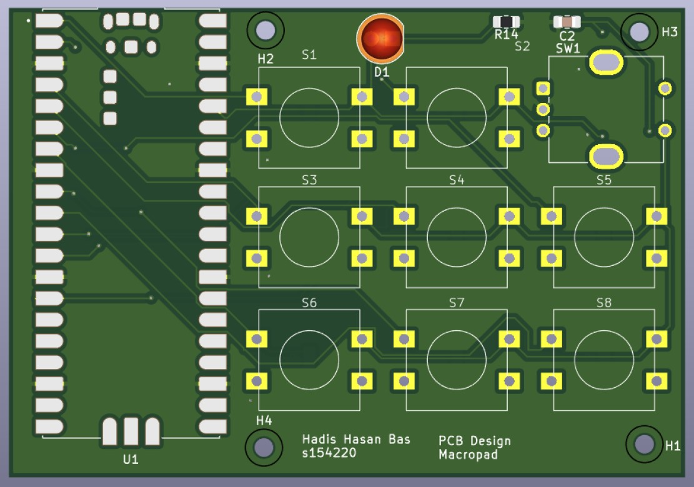
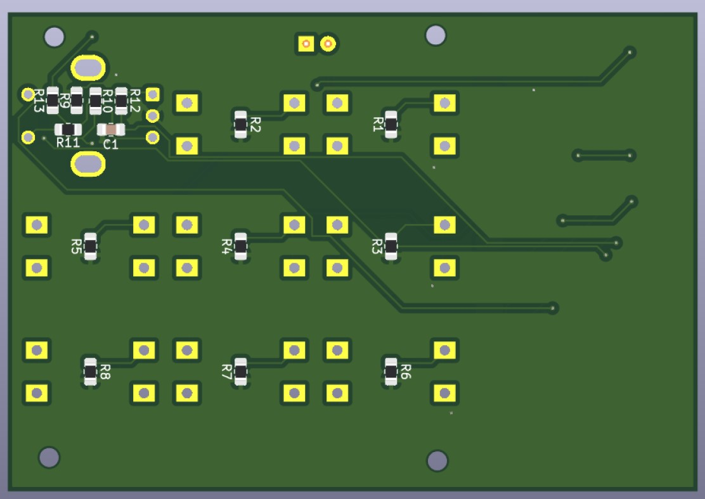
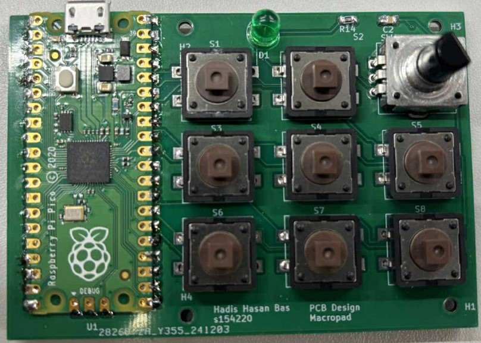
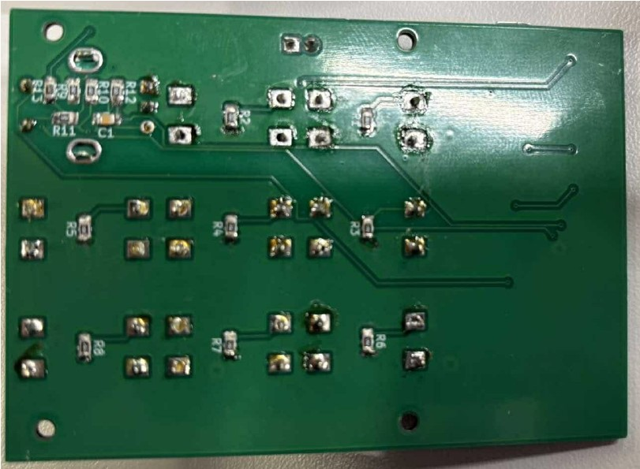
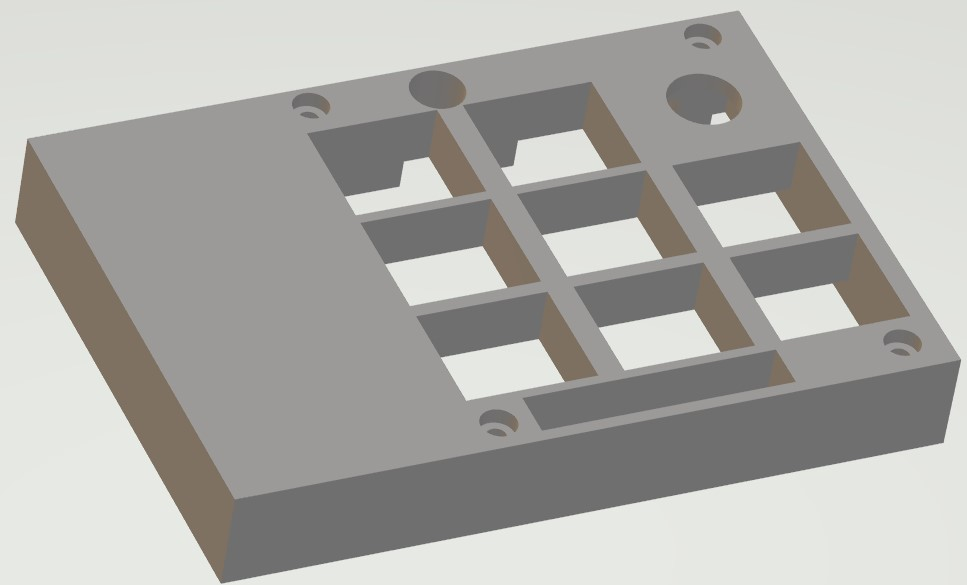
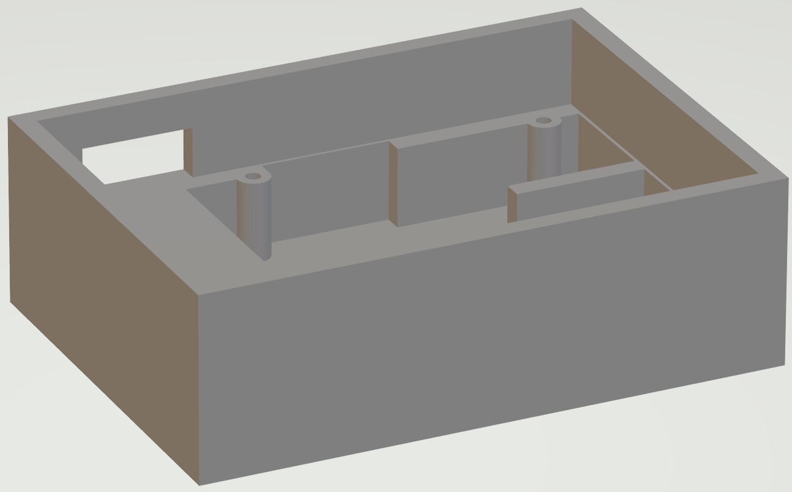

Control Panel
Een macropad is een klein toetsenbord dat bestaat uit een beperkt aantal toetsen, of andere inputmogelijkheden zoals een rotary encoder. Het is ontworpen om sneltoetsen of macro’s (vooraf ingestelde acties) uit te voeren met een druk op de knop. Macropads worden vaak gebruikt door mensen die efficiënt willen werken, zoals programmeurs, ontwerpers en gamers, omdat ze hiermee repetitieve taken kunnen automatiseren. De toetsen kunnen worden geprogrammeerd om complexe commando's uit te voeren, wat tijd bespaart en de workflow vereenvoudigt.
Doel?
Het ontwerpen van een macropad gebaseerd op de Raspberry Pi Pico in KiCAD. Voor deze opdracht gebruik je minimaal 4 tot maximaal drukknoppen. Hierboven op voorzie je een rotary encoder
Vereisten
- - Gebruik een GND plane
- - Voorzie mounting holes
- - Geen dode ruimte
- - Naam op PCB
- - Gebruik de volgende componenten:
- - Raspberry Pi Pico
- - MULTICOMP PRO - MCDTS2-4N - Tactile Switch
- - BOURNS - PEC12R-4220F-S0024 - Rotary Encoder
- - Zorg er voor de USB connector van de Pico toegankelijk is
- - Hou rekening met het gebruik van het macropad
- - Weerstanden en condensatoren zijn SMD met een 0805 footprint

Kicad Design
De design moesten we maken via Kicad dit is een een gratis, open-source softwarepakket voor electronic design automation (EDA), waarmee gebruikers elektronische schema's en printplaten (PCB's) kunnen ontwerpen. Deze design konden we ook realiseren door deze te sturen en te laten maken.


Voltooid panel
De design moesten we maken via Kicad dit is een een gratis, open-source softwarepakket voor electronic design automation (EDA), waarmee gebruikers elektronische schema's en printplaten (PCB's) kunnen ontwerpen. Deze design konden we ook realiseren door deze te sturen en te laten maken.


Extra's
Als laatst wou ik nog een doosje maken voor de printplaat. Zodat deze niet naakt gebruikt moet worden. Met Autodesk Fusion kon ik een disign maken en met behulp van een 3D-printer kon ik deze printen.


Video
In de video ziet u dat ik mijn control panel verbind met mijn laptop, voor de test heb ik de knoppen simpele opdrachten gegeven, namelijk het typen van 1 tot en met 8. Daarnaast wordt de rotary encoder gebruikt om de volume aantepassen.